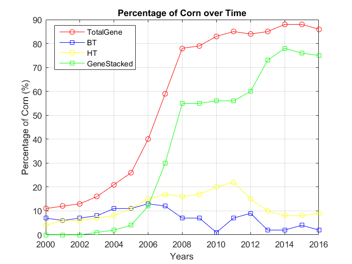
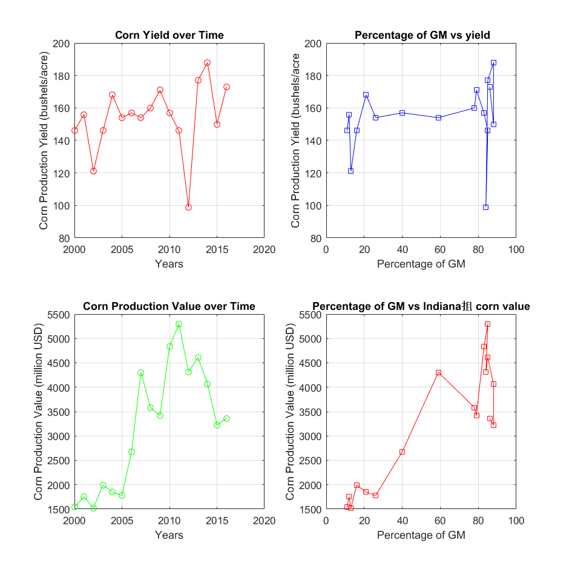

Contents
%%%%%%%%%%%%%%%%%%%%%%%%%%%%%%%%%%%%%%%%%%%%%%%%%%%%%%%%%%%%%%%%%%%%% % ENGR 132 % Program Description % ... % % Assigment Information % Assignment: PS 02, Problem 03 % Author: Tian Xia, xia80@purdue.edu % Team ID: 003-02 % Paired Programmer: % Contributor: Tian Xia, xia80@purdue %%%%%%%%%%%%%%%%%%%%%%%%%%%%%%%%%%%%%%%%%%%%%%%%%%%%%%%%%%%%%%%%%%%%%
__________________
INITIALIZATION
corn = csvread('Data_Indiana_GMcorn.csv',5,0)
Year = corn(:,1)
TotalGM = corn(:,2)
BT = corn(:,3)
HT = corn(:,4)
GeneStacked= corn(:,5)
Harvestcornares = corn(:,6)
Harvestcornbushels = corn(:,7)
Cornproductionyield = corn(:,8)
Cornproductionvalue = corn(:,9)
corn =
1.0e+09 *
Columns 1 through 7
0.0000 0.0000 0.0000 0.0000 0.0000 0.0055 0.9463
0.0000 0.0000 0.0000 0.0000 0.0000 0.0055 0.8220
0.0000 0.0000 0.0000 0.0000 0.0000 0.0058 1.0848
0.0000 0.0000 0.0000 0.0000 0.0000 0.0058 1.0319
0.0000 0.0000 0.0000 0.0000 0.0000 0.0060 0.5970
0.0000 0.0000 0.0000 0.0000 0.0000 0.0057 0.8395
0.0000 0.0000 0.0000 0.0000 0.0000 0.0057 0.8980
0.0000 0.0000 0.0000 0.0000 0.0000 0.0055 0.9337
0.0000 0.0000 0.0000 0.0000 0.0000 0.0055 0.8736
0.0000 0.0000 0.0000 0.0000 0.0000 0.0064 0.9810
0.0000 0.0000 0.0000 0.0000 0.0000 0.0054 0.8447
0.0000 0.0000 0.0000 0.0000 0.0000 0.0058 0.8886
0.0000 0.0000 0.0000 0.0000 0.0000 0.0055 0.9290
0.0000 0.0000 0.0000 0.0000 0.0000 0.0054 0.7869
0.0000 0.0000 0.0000 0.0000 0 0.0052 0.6316
0.0000 0.0000 0.0000 0.0000 0 0.0057 0.8845
0.0000 0.0000 0.0000 0.0000 0 0.0056 0.8103
Columns 8 through 9
0.0000 0.0000
0.0000 0.0000
0.0000 0.0000
0.0000 0.0000
0.0000 0.0000
0.0000 0.0000
0.0000 0.0000
0.0000 0.0000
0.0000 0.0000
0.0000 0.0000
0.0000 0.0000
0.0000 0.0000
0.0000 0.0000
0.0000 0.0000
0.0000 0.0000
0.0000 0.0000
0.0000 0.0000
Year =
2016
2015
2014
2013
2012
2011
2010
2009
2008
2007
2006
2005
2004
2003
2002
2001
2000
TotalGM =
86
88
88
85
84
85
83
79
78
59
40
26
21
16
13
12
11
BT =
2
4
2
2
9
7
1
7
7
12
13
11
11
8
7
6
7
HT =
9
8
8
10
15
22
20
17
16
17
15
11
8
7
6
6
4
GeneStacked =
75
76
78
73
60
56
56
55
55
30
12
4
2
1
0
0
0
Harvestcornares =
5470000
5480000
5770000
5830000
6030000
5750000
5720000
5460000
5460000
6370000
5380000
5770000
5530000
5390000
5220000
5670000
5550000
Harvestcornbushels =
1.0e+09 *
0.9463
0.8220
1.0848
1.0319
0.5970
0.8395
0.8980
0.9337
0.8736
0.9810
0.8447
0.8886
0.9290
0.7869
0.6316
0.8845
0.8103
Cornproductionyield =
173
150
188
177
99
146
157
171
160
154
157
154
168
146
121
156
146
Cornproductionvalue =
1.0e+03 *
3.3594
3.2222
4.0679
4.6126
4.3161
5.2972
4.8315
3.4172
3.5818
4.3065
2.6776
1.7772
1.8488
1.9910
1.5222
1.7514
1.5396
__________________
GM CORN VARIETIES PLOT
plot(Year, TotalGM,'-or') title('Percentage of Corn over Time') xlabel('Years') ylabel('Percentage of Corn (%)') grid on hold on plot(Year, BT,'-sb') title('Percentage of Corn over Time') xlabel('Years') ylabel('Percentage of Corn (%)') hold on plot(Year, HT,'-oy') title('Percentage of Corn over Time') xlabel('Years') ylabel('Percentage of Corn (%)') hold on plot(Year, GeneStacked,'-sg') title('Percentage of Corn over Time') xlabel('Years') ylabel('Percentage of Corn (%)') hold off legend('TotalGene','BT','HT','GeneStacked','location',[0.27 0.82 0 0]) figure
__________________
CORN PRODUCTION PLOT
set(gcf, 'units','centimeters','position',[0 0 20 20]) subplot(2,2,1) plot(Year,Cornproductionyield,'-or') title('Corn Yield over Time') xlabel('Years') ylabel('Corn Production Yield (bushels/acre)') grid on subplot(2,2,2) plot(TotalGM,Cornproductionyield,'-sb') title(' Percentage of GM vs yield') xlabel('Percentage of GM') ylabel('Corn Production Yield (bushels/acre') grid on subplot(2,2,3) plot(Year,Cornproductionvalue,'-og') title('Corn Production Value over Time') xlabel('Years') ylabel('Corn Production Value (million USD)') grid on subplot(2,2,4) plot(TotalGM,Cornproductionvalue,'-sr') title('Percentage of GM vs Indiana抯 corn value') xlabel('Percentage of GM') ylabel('Corn Production Value (million USD)') grid on
__________________
ANALYSIS
-- Q1
As can be seen from the figure 1, percentage of TotalGene and GeneStacked increases dramatically, while that of the BT and HT increse slightlt and follow up with decrease.
-- Q2
Subplot B might be the best one to represent the Figure.
-- Q3
As the time goes by, the production value increase as the percentage of TotalGene increase. Due to Figure 1, we obtain that the percentage of BT and HT decrease slightly while that of TotalGene and GeneStacked increase significantly. It shows that the quality of corn increase overall, resulting in the increase in total value.
-- Q4
I would recommend the farm company to transit GeneStacked corn. Because the percentage of this type of corn increases dramatically from 2000 to 2016. With this type of corn, the benefits the farm obtain will be the largest.
__________________
ACADEMIC INTEGRITY STATEMENT
I/We have not used source code obtained from any other unauthorized source, either modified or unmodified. Neither have I/we provided access to my/our code to another. The project I/we am/are submitting is my/our own original work.